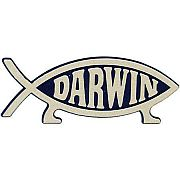
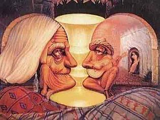

Cada vez más es la vida una cuestión de imagen. Hacemos lo que hacemos como una forma de establecernos y mantener una reputación dentro de la comunidad. Nos constituimos bajo la amenaza continua del cambio y la ruina y nos damos cuenta del tiempo que ocupa mantener limpia esa imagen que tanto nos costó erigir y que no sólo nosotros mismos boicoteamos, comportándonos con el porte primitivo que nos caracteriza, sino que es también dilapidada por los demás, quienes forjan ideas preconcebidas sobre todo el mundo. Desafortunadamente para todos, al cerebro le gustan los patrones, los prefiere, los descubre en todos lados y, cuando lo hace, nos inyecta con químicos agradables para que continuemos buscándolos y prefiriéndolos…añades unos millones de años a la compleja receta y aquí estamos, limpiando imágenes y conciencias; descubriendo y creyendo en patrones inexistentes y preguntándonos por qué.
Si aquella joven en problemas hubiese sospechado que una atea era su “buen samaritano”, no hubiera respondido con aquel franco proceder. Pero en mi país, muy pocas personas asumirían que alguien es ateo y ella no pertenece a esa minoría. Con la empatía que todavía caracteriza a gran parte de la especie, le presté mi teléfono al que se aferró con el ímpetu de su edad. Acuciosamente, la curiosa joven se fijó en el pececito en mi carro, al que confundió con el cristiano en el de ella; al leerlo, sin embargo, me preguntó: “Darwin, y ¿quién es Darwin?”
![[Darwin]](glenys20100320_charles-darwin.jpg)
La palabra evolución en mi respuesta aparentemente la inquietó, yo, sin embargo, todavía no me recuperaba del desasosiego que ocasionó en mí su pregunta. No me acostumbro a que la gente no lo conozca. Darwin nos regaló la idea más revolucionaria sobre nosotros mismos, la más encantadora, fascinante y sensata que ha sido corroborada un millón de veces más por la biología y la genética. Charles Darwin debería ser conocido por todos los miembros de la especie, independientemente de si desean negarlo (porque él sí existió) o aceptar la evolución como lo que es, un hecho; pero indudablemente conocerlo. Es más, su imagen debería ser mucho más popular que la de Einstein. Sin embargo, las ideas del famoso físico no involucran a la especie directamente, sus conceptos son tan abstractos que la gente en general los acepta sin entenderlos o malinterpretándolos antojadizamente. Otra cosa distinta ocurrió con Darwin. Su teoría nos emparentó, más que con un antepasado común con el chimpancé, con todas las demás especies sobre el planeta, este extraordinario pensador humano nos entregó nuestro árbol genealógico y al hacerlo, para no caer en una vulgar metáfora escatológica, dilapidó el Jardín del Edén. Desde entonces y en dulce venganza, la mayoría de las religiones ha hecho todo lo que ha estado a su alcance para desvirtuar sus nociones y mantener sus ideas lejos de los salones educativos.
“Usted debería quitar eso de ahí porque la gente que piensa así va a sufrir por toda la eternidad”, me aconseja la chica con aire de extrema preocupación mientras marca otro número con notable rapidez.
No es la primera vez que me amenazan con el fuego eterno aunque la mayoría ha sido vía email y en una intimidación colectiva contra los editores de SinDioses, algo que hace la idea de violencia hacia mi persona menos irritante pues no estaría mal pasarse la eternidad con gente como Marcelo y Ferney. El rechazo a priori del ateísmo ha sido integrado en la psiquis humana viciosa y exitosamente por las religiones. Un odio realmente infundado y que ha sido vinculado al comunismo por tanto tiempo, que el estereotipo del ateo que poseen muchos no tiene nada que ver conmigo ni con la mayoría de los ateos que conozco.
“Es pecado renegar de Dios”, explicaba la jovencita con actitud resignada; la miro y pienso que nunca entenderá, ni que se lo explique mil veces, que no reniego de los dioses, de ninguno, sencillamente pienso que no existen, que nunca han existido…una idea completamente distinta.
Para vender un producto en un mercado saturado hay que empujar un meme hasta el cansancio. Insertarlo en las neuronas del mundo a través de los canales que nos atan durante horas a ese entretenimiento inocuo que fija los patrones en los que clasificaremos y ubicaremos a individuos en limitados estereotipos en el que muy pocos caben completamente; canales que promueven una plácida muerte neuronal al hacernos caer en el error de no pensar.
En el caso publicitario del ateísmo, no creer ha sido promocionado como una acción vinculada al Diablo, el villano genérico en casi todas las religiones, magistral idea publicitaria que ha calado en la mente del creyente en general y que haría temblar de envidia al mismísimo Don Draper. El trabajo que se ha hecho ha sido fenomenal, todavía me sorprende lo difícil que se les hace comprender que para el ateo, el diablo tampoco existe. Tener un vínculo con él equivale a tener un vínculo con Shrek.
Quise saber si la chica me condenaría al fuego eterno, pero los religiosos tienden a ser muy buenos con la retórica: “Eso lo tendrá que decidir Dios”, dijo quedamente, devolviéndome el teléfono. La presioné un poco más, le pedí que imaginara que era su decisión, que Dios le preguntaría a ella qué hacer conmigo. Su decisión fue complaciente y generosa; “pero Dios tiene la respuesta final”, añade y asumo la amenaza otra vez pero me río con la ironía: en tantas ocasiones al leer la Biblia he sentido que somos mucho más bondadosos que el dios allí descrito.
No quise abundar y reprimí la curiosidad de saber por qué adoraba a un Dios cuyo sentido de justicia era tan distinto al de ella, una divinidad vanidosa capaz de condenarte por el simple hecho de que no le rindas ciega pleitesía… Pero muchos creyentes todavía sienten al ateísmo como algo muy ajeno a sus contornos, una visión imposible: ‘ningún ateo estará escuchando o leyendo esto, esa gente anda haciendo pactos con el diablo para mover las placas tectónicas y sepultar a las personas bajo sus hogares’. No obstante, cuando una voz respetuosa (recuerde, el ateo irrespetuoso confirma su relación con el demonio) y racional defiende las acciones e ideas con un poco de sensatez, la sorpresa del interlocutor es palpable. Suscitar esas reacciones en los demás y recuperar una imagen sensata sobre el ateísmo es el objetivo de muchos ateos que hemos decidido ser más vocales en cuanto a nuestras ideologías.
Ciertamente, la imagen de Dios ha sido sometida a más cambios que Madonna. Hoy mismo, sus objetivos y sus normas son interpretados de variadas formas por cada iglesia que lo adora. Sin contar con las demás doctrinas, profetas y divinidades en el mundo y a través de los tiempos. Muchos cristianos se han alejado de la versión malévola del Dios de Abraham para descansar plácidamente en algunos de los momentos más dulces en la vida de Jesús, pero no todos. Millones todavía claman a un Dios vengativo que arroja al fuego eterno a todo el que se atreva a contradecirlo o a desobedecerlo, un padre dictatorial con actitud de Gran Hermano que no te permite disfrutar la vida, restringiendo a todo miembro de su club sobrenatural a normas absurdas y a una actitud pasiva ante todos sus dogmas.
![[evolución]](glenys20100320_evolution.jpg)
Pero no son los inexistentes dioses, por supuesto, somos nosotros mismos. Humanos esclavizando a humanos con cadenas de ignorancia y miedo, autoridades vacías con poderes mágicos que nunca han podido demostrar. Hay que exigir más de nuestras creencias, ponerlas a prueba y aceptar como hechos verdaderos aquellas teorías que han sido establecidas con evidencias tenaces que se sostienen al escrutinio de las tecnologías modernas y se mantienen vivas porque son aplicadas continuamente con éxitos incuestionables. La evolución, por ejemplo, es una de ellas. No conocer quién fue, es y siempre será Charles Darwin es un asunto vergonzoso que limita el pensamiento del individuo, encarcelándolo en una visión del mundo apocada y condicionada. Conocerlo y aún así ignorar sus logros es no comprender cómo funciona la genética, mucho menos la biología evolutiva.
“Yo creo en Dios y estoy de acuerdo con Darwin”, expresó una vez un profesor en la universidad. “No veo por qué limitarnos a sólo apreciar la labor de uno de ellos”.
Concuerdo a medias con él, pero elogio su forma de pensar. Es que puedo percibir la labor de la selección natural como la descubrió Darwin, algo que no me ocurre con la de Dios.
Los designios de nuestros cerebros
Evidencias contra mitos
Es indudable que la observación y la experimentación han asesinado un sinnúmero de mitos. Karl Popper dijo una vez que esa era precisamente la labor de la ciencia: erradicar mitos. Pero hemos descubierto en el camino que los mitos no dejan de nacer, asesinas uno y otro aparece casi inmediatamente. La gente deja de creer en una cosa para creer en otras, como el adicto que se recupera de una sustancia sustituyéndola con otra más aceptada y quizás menos dañina que la abandonada.
Nadie está exento de creer o de haber creído alguna vez en un mito, en un supuesto hecho que más tarde fuera erradicado por falta de evidencias científicas o por el descubrimiento de evidencias en su contra.
“La postura propia de un escéptico o de un científico debe ser no emitir juicios mientas las evidencias estén pendientes. En la práctica, esto no es siempre posible. No podemos tomarnos el tiempo para investigar minuciosamente todo lo que escuchamos. Es razonable aceptar provisionalmente algo que todo el mundo da por verdadero, siempre y cuando sea plausible y que de alguna forma esté basado en evidencias preliminares. Debemos ser conscientes de que estas afirmaciones pueden estar fundamentadas en pruebas inadecuadas y, por lo tanto, mantenernos listos a cambiar de opinión al momento en que tengamos mejores evidencias”, escribió para la revista eSkeptic la doctora Harriet Hall.
El escepticismo de Hall resultó ser el más sorprendido al descubrir unos cuantos mitos en los que ella también creía en el libro “50 grandes mitos de la psicología popular”, escrito por Scout O. Lilienfield, Steven Jay Lynn, John Ruscio y el fallecido gran escéptico, Barry L. Beyerstein. Los autores realizaron una inmensa labor investigativa sobre una gran cantidad de hechos que damos por sentado pero que realmente no están basados en evidencias; muchos de ellos, de hecho, persisten en la mente humana a pesar de todas las evidencias que ya existen en su contra.
Los autores también rastrearon las razones por las que tan fácilmente caemos en estas trampas de la credulidad. Nos cuentan que diez acciones permiten el nacimiento de un mito: la voz del pueblo o vox populi, si un hecho es repetido hasta el cansancio llega un momento en que pensamos que es verdad; la preferencia por las respuestas fáciles y las fórmulas mágicas; nuestra percepción y memoria son selectivas, recordamos cuando acertamos pero olvidamos cuando fallamos; las inferencias de causas por correlación; los razonamientos tipo post hoc, ergo propter hoc, cuando cometemos la equivocación de apuntar algo como la causa de un evento sólo porque lo precedió; la exposición limitada a grupos parciales; la evaluación del parecido entre dos cosas basada en semejanzas superficiales; las representaciones engañosas de filmes y los medios en general; las exageraciones acerca de una verdad pequeña; y la confusión en la terminología de palabras científicas y demás.
Los autores enfatizan uno de mis temas preferidos: la preferencia neuronal por los patrones. La capacidad del cerebro de llenar huecos, ya sean físicos o de razonamiento, con las opciones que tenga a mano, sólo facilita la continua creación de mitos persistentes.
De hecho, el otro día en un comercial sobre una serie de televisión llamada Fringe, que trata sobre temas paranormales, una voz afirmaba el mito de que sólo usamos el 15% de nuestros cerebros, una de las equivocaciones más persistentes en mi entorno. Entiendo que los promotores de estas pseudociencias deseen integrar esta ridícula idea en las personas para que les sea más fácil creer que la telepatía, por ejemplo, es factible, o cualquier otra ocurrencia paranormal. Sin embargo, la tecnología que poseemos en la actualidad hace mucho que presentó evidencias en contra de este mito. Tristemente, la humanidad hoy en día se mueve en un peligroso territorio quimérico donde cualquier cosa puede ser posible, hasta los relatos mediocres de una serie televisiva de ciencia ficción.

“Somos susceptibles a ilusiones ópticas y a otras ilusiones cognoscitivas, también somos propensos a ver patrones donde no hay ninguno, nuestra intuición no es de fiar y es un hecho que el sentido común no siempre está en lo correcto. De hecho, la ciencia es el sentido menos común de todos, requiere que pongamos a un lado nuestros preconceptos cuando estamos evaluando evidencias”, escribieron los autores.
Y todos conocemos ya lo difícil que resulta ir en contra de los designios del cerebro.
Volver al índice de la Lupa Herética
© 2008-2024 Glenys Álvarez y Sin Dioses. Prohibida la reproducción con fines comerciales.
Comentarios
Comments powered by Disqus